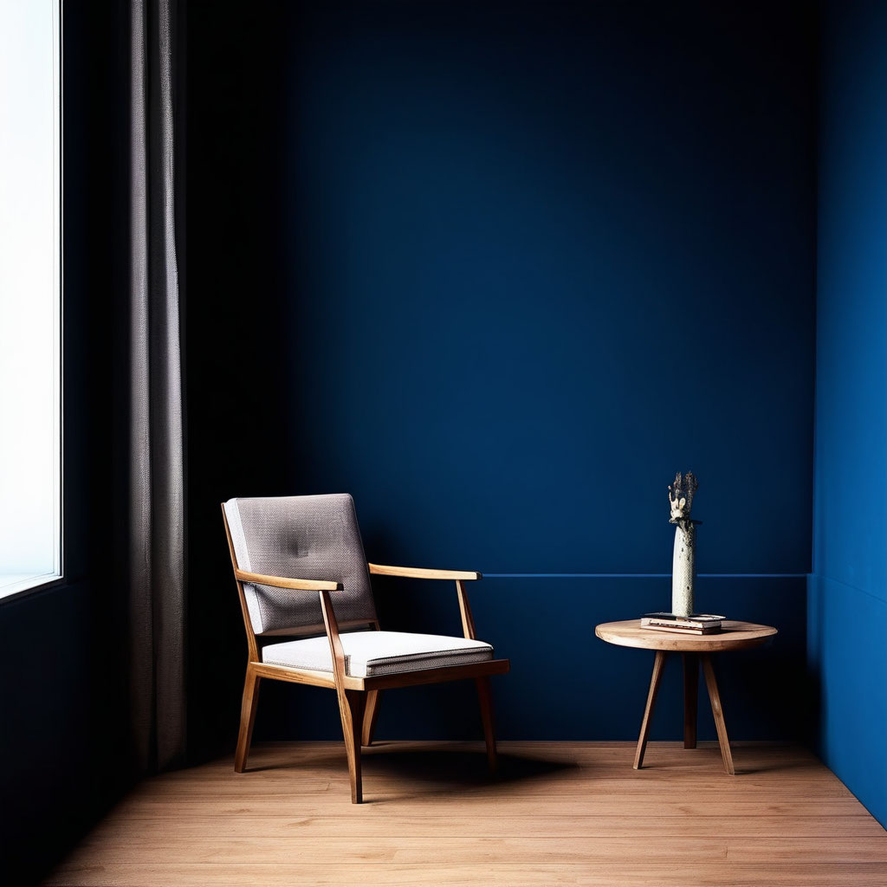

Субмодальное перепрограммирование опыта

Описание:
Техника «Субмодальное перепрограммирование опыта» позволяет менять оценку ситуаций, управлять вниманием, работать с эмоциями, создавать мотивацию и менять убеждения.
Категория техники:
Смыслы
Время:
30 минут
Зачем:
Зная, в какой репрезентативной системе мы кодируем свою информацию, и меняя ее субмодальности, мы может перепрограммировать любой наш опыт, в частности: *менять оценку ситуации с неприятной на положительную или нейтральную (например, перестать сердиться по поводу шума вокруг и не замечать его); *убирать навязчивые состояния (например, переедание и курение); *управлять вниманием и восприятием текущей ситуации (например, полностью погрузиться в работу); *работать с эмоциями и состояниями (например, вызвать у себя творческое вдохновение); *создавать мотивацию делать что-то, чего ранее не хотелось (например, писать диссертацию); *менять убеждения (например, создать у клиента убежденность в возможности исцеления); *работать с фобиями.
Как это работает:
Личный опыт каждого из нас хранится в нейронной сети головного мозга, которая формируется на протяжении всей жизни. Каждый раз, когда мы взаимодействуем с окружающим миром, что-то принимаем на веру или ощущаем с помощью своих органов чувств, наш мозг пытается найти место новой информации в этой сети. Кодирование нашего отношения (нравится, не нравится, нейтрально) происходит с помощью субмодальностей (образов, звуков, ощущений). Действия, повторяемые изо дня в день, приводят к сильной сцепке нейронных связей и закреплению привычной реакции. Вот почему, встречая знакомого человека, мы, не задумываясь, приветливо ему улыбаемся или досадливо хмуримся: наше отношение к нему зафиксировано в нашей нейросети. Но иногда сцепка нейросетей происходит в результате однократного интенсивного события, вызвавшего у нас бурные, как правило, негативные эмоции. В этом случае однажды сложившиеся нейронные связи будут вызывать сильные переживания каждый раз при мысли о травмирующем событии, пока данный опыт не будет пережит и переосмыслен. К сожалению, большинство людей не работают целенаправленно над внутренними образами, в результате чего их мозг спонтанно показывает им одну картину за другой, вызывая у них перепады настроения и самочувствия. Между тем «субмодальности», по словам авторов книги «НЛП. Большая книга эффективных техник» Боба Боденхамера и Майкла Холла, «открывают перед нами символический, или семантический, путь к кодированию высших концепций, являющихся номинализациями, а не объектами, которые мы можем видеть, слышать, нюхать или пробовать на вкус, относя к «реальным» или «нереальным», к «прошлому» или «будущему». Иными словами, изменение субмодальностей позволяет нам перекодировать свой опыт, создавая новые устойчивые нейронные связи.
Алгоритм выполнения:
-
Способ I
-
Представьте негативный образ ситуации, с которой вы хотите поработать. Зевните, потянитесь, чтобы тело включилось в работу. Это даст вам понимание, что вы управляете своим внутренним состоянием, а не наоборот.
-
Представьте нейтральную картинку (мы рекомендуем использовать образы трех геометрических фигур) и поочередно то приближайте ее, то отдаляйте ее. Можно крутить фигуры, менять цветность и т. д. Если работа с ними проходит успешно, можно переходить к следующему шагу.
-
Изменяйте визуальные субмодальные характеристики негативного события (цвет, размер, расстояние и т. д.).
-
Представьте картинку радостного события, где вы испытывали положительные эмоции (например, сдачу экзамена, покупку желанной вещи и т. д.).
-
Вернитесь к первой негативной картинке и наполните ее субмодальностями позитивного воспоминания (закрашивая, меняя расстояние, создавая границы и т. д.).
-
Проведите проверку на экологичность: если уровень тревоги снижается, значит, техника сделана правильно. Иногда бывает достаточно одного повторения. Смысл работы заключается не в том, чтобы стереть эти негативные переживания из памяти, а в том, чтобы отнестись к ним более спокойно, реалистично и гибко. Способ II
-
Представьте картинку только негативного события. Детально опишите ее субмодальности (местоположение, цвета, контрастность и т. д.)
-
Представьте, что у вас в руках пульт, с помощью которого вы можете изменить три субмодальности негативного образа: цвет, размер и расстояние. Обесцветьте картину (чтобы получилось сплошное белое пятно), уменьшите ее и переместите далеко за горизонт. Цвет картинки можно менять на любимый, но мы рекомендуем делать ее расплывчатым белым пятном.
-
Проведите проверку на экологичность. Данную технику можно использовать с запросами об улучшении здоровья, страхами (например, похода к стоматологу). Ее можно использовать часто и практически без ограничений (кроме серьезных психических расстройств).
Дополнительные упражнения:
- «Усиление ресурсного состояния»
- Андреас, Стив. Паттерны магии Вирджинии Сатир. — М.: Прайм-Еврознак, 2005.
- Боденхамер, Боб. НЛП. Большая книга эффективных техник. — М.: АСТ, 2016.
- Бендлер Р. NLP. Используйте свой мозг для изменений. — М.: Ювента, 1995.
- Гриндер Дж. Черепахи до самого низа. — СПб.: Прайм-Еврознак, 2007.
- Демчог В. Самоосвобождающаяся игра, или Алхимия артистического мастерства. Веб-публикация: http://selfliberplay.narod.ru [23.08.2020].
- Дилтс Р. Стратегии гениев. — М.: Класс, 1998.
- Кочарян Г. С. Терапевтические техники нейролингвистического программирования (НЛП). — Киев: Ника-Центр, 2002.
- Камэрон-Бендлер Л. Лучшие техники в семейной терапии. С тех пор они жили счастливо. — СПб.: Прайм-Еврознак, 2007.
- Макдональд У. Руководство по субмодальностям. Веб-публикация: http://www.e-reading-lib.com/book.php?book=114182 [25.08.2020].
- Бендлер, Ричард. Используйте свой мозг для изменения. — Воронеж: МОДЭК, 1997.
- Гордон, Дэвид. Терапевтические метафоры. — СПб.: Белый кролик, 1995
- Холл, Майкл, Боденхамер, Боб. Полный курс НЛП. — М.: АСТ, 2016.
- Ковалев С. НЛП: программа «Счастливая судьба». Ставим, запускаем, используем! — М.: АСТ, 2016.
- Генри Д. Т. Цитаты. Веб-публикация: https://citaty.info/man/genri-devid-toro.
- Холл М., Боденхамер Б. НЛП. Большая книга эффективных техник. — М.: АСТ, 2017.
- Сертификационный курс «Практики НЛП». Методические материалы. Кочарян Гарник. Терапевтические техники НЛП. — М.: Ника, 2002.
- Холл М., Боденхамер Б. НЛП. Большая книга эффективных техник. — М.: АСТ, 2017.
- Бендлер Р., Макдональд У. Руководство по субмодальностям. — СПб.: Прайм-Еврознак, 2014.
- William J. The Principles of Psychology, Vols. 1-2 (2 Volumes in 1). — Harvard University Press, 2017.
- Бендлер Р., Гриндер Дж. Из лягушек — в принцы. Нейролингвистическое программирование. — Калининград: Корвет, 2021.
- Шапиро Ф. Психотерапия эмоциональных травм с помощью движений глаз: Основные принципы, протоколы и процедуры / Пер. с англ. А. С. Ригина. — М.: Класс, 1998.